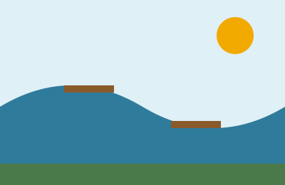

Three parks worth the detour
| Park | Restroom | Loop length |
|---|---|---|
| Gallup Park | Seasonal | 3.2 km |
| Burns Park | None | 1.1 km |
| Bandemer Park | None | 2.4 km |

Gallup Park follows both banks of the Huron River and crosses at two wooden bridges.
Burns Park is a neighborhood square with a small pond and a long straight path under maples.
Bandemer Park is the quietest option, with a paved accessible route from the south lot.
Gallup Park
The paved loop is the busiest of the three on weekend mornings, so an early start keeps the path clear. Benches sit every few hundred metres and most of them face the water.
Burns Park
The path is wide enough for two people side by side. There is no fountain, but a grocery store two blocks east sells cold drinks.
Bandemer Park
The gravel section near the north entrance can be muddy after rain. Watch for cyclists on the shared path, and use the south entrance if you need an all paved route.